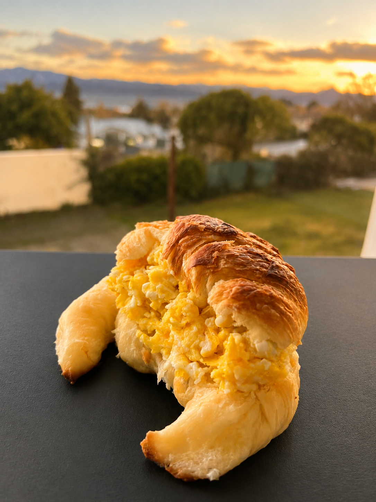
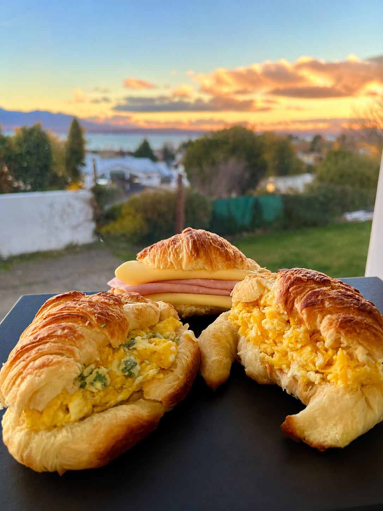
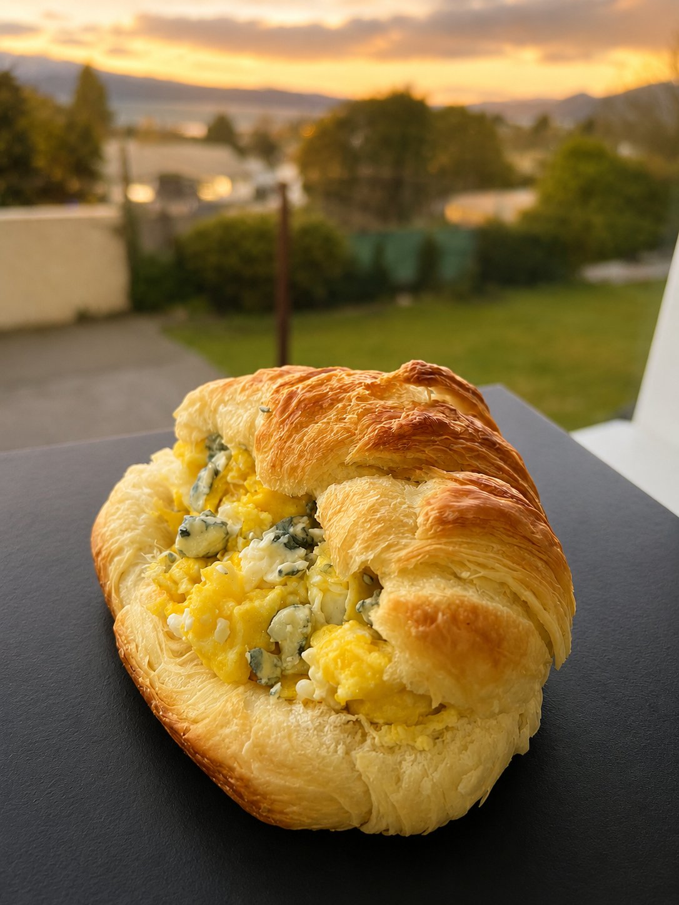
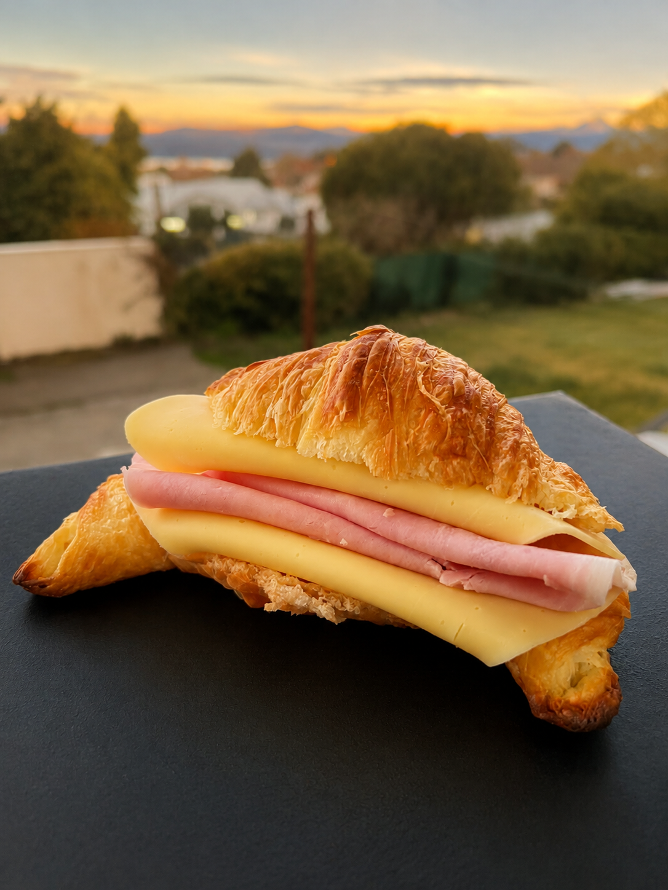
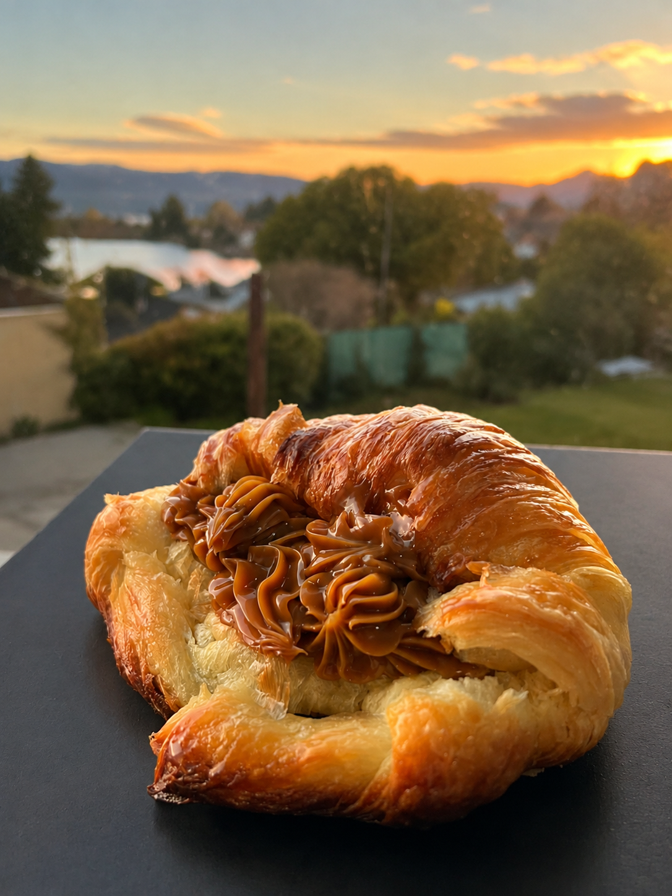
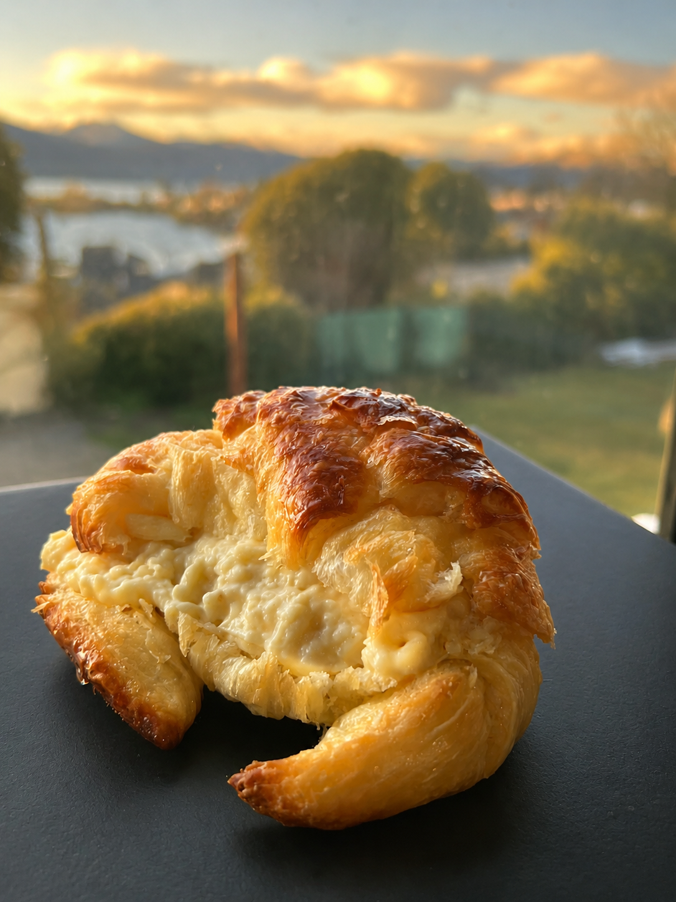
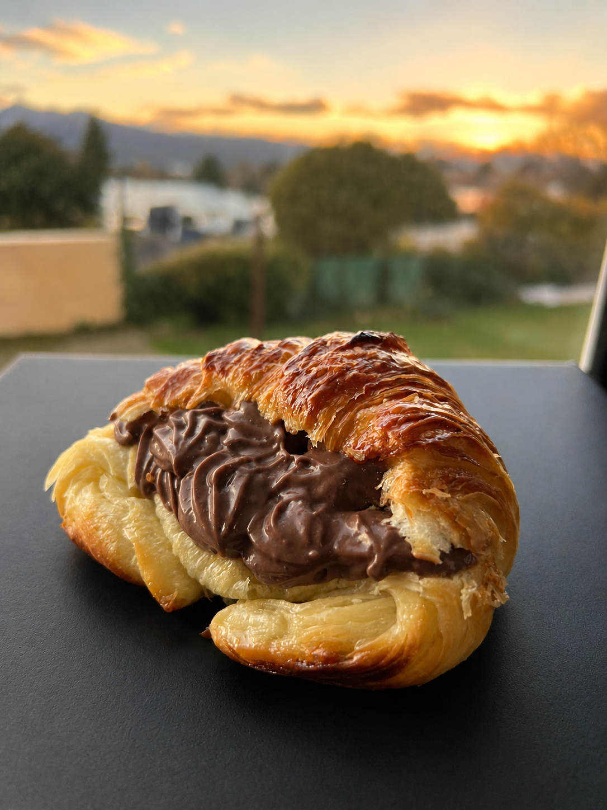
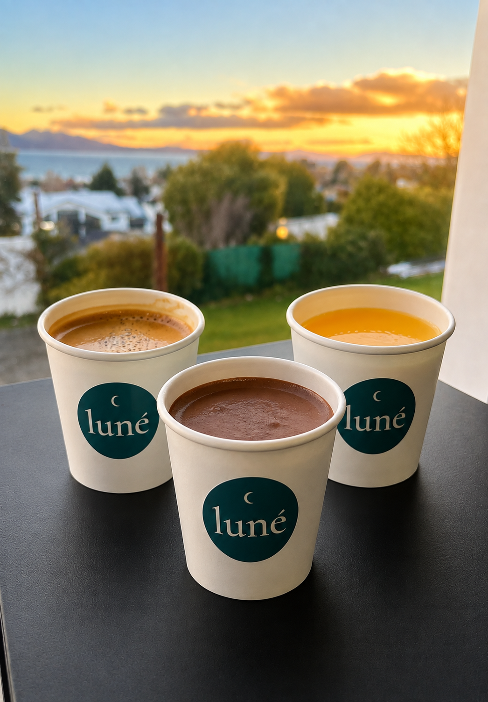

01Salada
Revuelta
Medialuna rellena con huevo cremoso, suave y recién preparado.
Medialunas rellenas & café
Medialunas recién horneadas, rellenos irresistibles y café de especialidad para disfrutar donde quieras.
Descubrir sabores
Nuestras especialidades
Medialunas recién horneadas con rellenos dulces y salados, preparadas para disfrutar en cualquier momento del día.

01Salada
Medialuna rellena con huevo cremoso, suave y recién preparado.

02Salada
Huevo cremoso combinado con el sabor intenso del queso roquefort.

03Salada
El clásico de siempre, con jamón y queso fundido en una medialuna tibia.

04Dulce
Una medialuna dorada con un relleno generoso de dulce de leche.

05Dulce
Suave crema pastelera dentro de una medialuna recién horneada.

06Dulce
Una opción intensa y cremosa para quienes siempre eligen chocolate.
Para acompañar
Opciones preparadas por pedido para acompañar nuestras medialunas.

Una opción fresca y natural para disfrutar en cualquier momento del día.
Cremoso, intenso y reconfortante, ideal para acompañar algo dulce.
Café extraido en prensa francesa; 100% arabica, tostado intenso, con notas de chocolate, nuez y caramelo
Nuestra propuesta
En LUNÉ preparamos medialunas rellenas y bebidas por pedido, buscando transformar algo simple en un momento especial.
Trabajamos con una carta pequeña, sabores dulces y salados y productos preparados para disfrutar recién hechos.
Medialunas rellenas & café
Cómo pedir
Elegí tus medialunas y bebidas favoritas. Nosotros preparamos todo para que lo disfrutes recién hecho.
01
Seleccioná las medialunas y bebidas que quieras pedir.
02
Contactanos por WhatsApp y consultá la disponibilidad.
03
Coordinamos el horario y el envío de tu pedido.
Seguinos en Instagram
Conocé nuestros sabores, novedades y el proceso detrás de cada pedido.
Ver Instagram